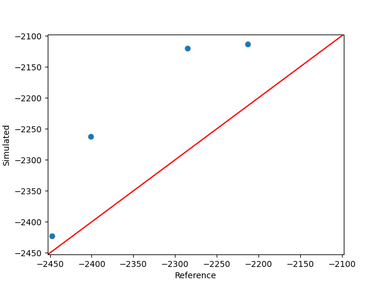

Note
Click here to download the full example code
An example of stochastic validation point¶
from __future__ import annotations
import logging
from pathlib import Path
from gemseo.datasets.io_dataset import IODataset
from pandas import read_csv
from vimseo import EXAMPLE_RUNS_DIR
from vimseo.api import activate_logger
from vimseo.api import create_model
from vimseo.core.model_settings import IntegratedModelSettings
from vimseo.io.space_io import SpaceToolFileIO
from vimseo.material.material import Material
from vimseo.material_lib import MATERIAL_LIB_DIR
from vimseo.storage_management.base_storage_manager import PersistencyPolicy
from vimseo.tools.space.space_tool_result import SpaceToolResult
from vimseo.tools.validation.validation_point import NominalValuesOutputType
from vimseo.tools.validation.validation_point import StochasticValidationPoint
from vimseo.tools.validation.validation_point import StochasticValidationPointInputs
from vimseo.tools.validation.validation_point import StochasticValidationPointSettings
from vimseo.tools.validation.validation_point import read_nominal_values
from vimseo.utilities.datasets import GROUP_SEPARATORS
from vimseo.utilities.datasets import SEP
from vimseo.utilities.datasets import dataframe_to_dataset
from vimseo.utilities.generate_validation_reference import Bias
from vimseo.utilities.generate_validation_reference import (
generate_reference_from_parameter_space,
)
activate_logger(level=logging.INFO)
First we generate synthetic reference data, using an analytical bending test model, and bias the output of interest by 5 \%.
model_name = "BendingTestAnalytical"
load_case = "Cantilever"
target_model = create_model(
model_name,
load_case,
model_options=IntegratedModelSettings(
directory_archive_persistency=PersistencyPolicy.DELETE_ALWAYS,
directory_scratch_persistency=PersistencyPolicy.DELETE_ALWAYS,
directory_archive_root=EXAMPLE_RUNS_DIR / "archive/validation_point",
directory_scratch_root=EXAMPLE_RUNS_DIR / "scratch/validation_point",
cache_file_path=EXAMPLE_RUNS_DIR
/ f"caches/validation_point/target_{model_name}_{load_case}_cache.hdf",
),
)
target_model.cache = None
reference_dataset_cantilever = generate_reference_from_parameter_space(
target_model,
SpaceToolFileIO()
.read(file_name="bending_test_validation_input_space.json")
.parameter_space,
n_samples=6,
input_names=["width", "height", "imposed_dplt"],
output_names=["reaction_forces", "maximum_dplt"],
outputs_to_bias={"reaction_forces": Bias(mult_factor=1.05)},
additional_name_to_data={"nominal_length": 600.0, "batch": 1},
)
reference_dataset_cantilever.to_csv(
"reference_validation_bending_test_cantilever.csv", sep=SEP
)
print("The reference data: ", reference_dataset_cantilever)
Out:
C:\Users\sebastien.bocquet\Dev\vimseo\.tox\doc\Lib\site-packages\pydantic\main.py:209: DeprecationWarning:
Conversion of an array with ndim > 0 to a scalar is deprecated, and will error in future. Ensure you extract a single element from your array before performing this operation. (Deprecated NumPy 1.25.)
INFO - 23:52:53: Working directory is C:\Users\sebastien.bocquet\Dev\vimseo\docs\runnable_examples\06_validation_point\CustomDOETool\78
INFO - 23:52:53:
INFO - 23:52:53: *** Start DOEScenario execution ***
INFO - 23:52:53: DOEScenario
INFO - 23:52:53: Disciplines: Model BendingTestAnalytical: An analytical model for the bending of a parallelepipedic beam
INFO - 23:52:53:
INFO - 23:52:53: Load case:
INFO - 23:52:53: Load case Cantilever: A cantilever load case.
INFO - 23:52:53:
INFO - 23:52:53: Boundary condition variables:
INFO - 23:52:53: ['imposed_dplt', 'relative_dplt_location']
INFO - 23:52:53:
INFO - 23:52:53: Plot parameters:
INFO - 23:52:53: {
INFO - 23:52:53: "curves": []
INFO - 23:52:53: }
INFO - 23:52:53: Load:
INFO - 23:52:53: Load(direction='', sign='', type='')
INFO - 23:52:53:
INFO - 23:52:53: Default values:
INFO - 23:52:53:
INFO - 23:52:53: Default geometrical variables:
INFO - 23:52:53: {"height": [40.0], "length": [600.0], "width": [30.0]}
INFO - 23:52:53:
INFO - 23:52:53: Default numerical variables:
INFO - 23:52:53: {}
INFO - 23:52:53:
INFO - 23:52:53: Default boundary conditions variables:
INFO - 23:52:53: {"imposed_dplt": [-5.0], "relative_dplt_location": [1.0]}
INFO - 23:52:53:
INFO - 23:52:53: Default material variables:
INFO - 23:52:53: {"nu_p": [0.3], "young_modulus": [210000.0]}
INFO - 23:52:53: model_inputs:
INFO - 23:52:53: [
INFO - 23:52:53: "length",
INFO - 23:52:53: "width",
INFO - 23:52:53: "height",
INFO - 23:52:53: "imposed_dplt",
INFO - 23:52:53: "relative_dplt_location",
INFO - 23:52:53: "young_modulus",
INFO - 23:52:53: "nu_p"
INFO - 23:52:53: ]
INFO - 23:52:53: model_outputs:
INFO - 23:52:53: [
INFO - 23:52:53: "reaction_forces",
INFO - 23:52:53: "moment",
INFO - 23:52:53: "moment_grid",
INFO - 23:52:53: "dplt",
INFO - 23:52:53: "dplt_grid",
INFO - 23:52:53: "maximum_dplt",
INFO - 23:52:53: "location_max_dplt",
INFO - 23:52:53: "dplt_at_force_location",
INFO - 23:52:53: "model",
INFO - 23:52:53: "load_case",
INFO - 23:52:53: "error_code",
INFO - 23:52:53: "description",
INFO - 23:52:53: "job_name",
INFO - 23:52:53: "persistent_result_files",
INFO - 23:52:53: "n_cpus",
INFO - 23:52:53: "date",
INFO - 23:52:53: "cpu_time",
INFO - 23:52:53: "user",
INFO - 23:52:53: "machine",
INFO - 23:52:53: "vims_git_version",
INFO - 23:52:53: "directory_archive_root",
INFO - 23:52:53: "directory_archive_job",
INFO - 23:52:53: "directory_scratch_root",
INFO - 23:52:53: "directory_scratch_job"
INFO - 23:52:53: ]
INFO - 23:52:53: MDO formulation: DisciplinaryOpt
INFO - 23:52:53: Optimization problem:
INFO - 23:52:53: minimize reaction_forces(width, height, imposed_dplt)
INFO - 23:52:53: with respect to height, imposed_dplt, width
INFO - 23:52:53: over the design space:
INFO - 23:52:53: +--------------+-------------+-------+-------------+-------+
INFO - 23:52:53: | Name | Lower bound | Value | Upper bound | Type |
INFO - 23:52:53: +--------------+-------------+-------+-------------+-------+
INFO - 23:52:53: | width | -inf | None | inf | float |
INFO - 23:52:53: | height | -inf | None | inf | float |
INFO - 23:52:53: | imposed_dplt | -inf | None | inf | float |
INFO - 23:52:53: +--------------+-------------+-------+-------------+-------+
INFO - 23:52:53: Solving optimization problem with algorithm CustomDOE:
INFO - 23:52:53: Current root directory of job directory is C:\Users\sebastien.bocquet\Dev\vimseo\docs\runnable_examples\model_runs\archive\validation_point.
INFO - 23:52:54: Removing job directory: C:\Users\sebastien.bocquet\Dev\vimseo\docs\runnable_examples\model_runs\archive\validation_point\BendingTestAnalytical\Cantilever\9
INFO - 23:52:54: Current root directory of job directory is C:\Users\sebastien.bocquet\Dev\vimseo\docs\runnable_examples\model_runs\archive\validation_point.
INFO - 23:52:54: Removing job directory: C:\Users\sebastien.bocquet\Dev\vimseo\docs\runnable_examples\model_runs\archive\validation_point\BendingTestAnalytical\Cantilever\9
INFO - 23:52:54: 17%|█▋ | 1/6 [00:00<00:00, 7.77 it/sec, obj=-2.18e+3]
INFO - 23:52:54: Current root directory of job directory is C:\Users\sebastien.bocquet\Dev\vimseo\docs\runnable_examples\model_runs\archive\validation_point.
INFO - 23:52:54: Removing job directory: C:\Users\sebastien.bocquet\Dev\vimseo\docs\runnable_examples\model_runs\archive\validation_point\BendingTestAnalytical\Cantilever\9
INFO - 23:52:54: Current root directory of job directory is C:\Users\sebastien.bocquet\Dev\vimseo\docs\runnable_examples\model_runs\archive\validation_point.
INFO - 23:52:54: Removing job directory: C:\Users\sebastien.bocquet\Dev\vimseo\docs\runnable_examples\model_runs\archive\validation_point\BendingTestAnalytical\Cantilever\9
INFO - 23:52:54: 33%|███▎ | 2/6 [00:00<00:00, 9.55 it/sec, obj=-2.17e+3]
INFO - 23:52:54: Current root directory of job directory is C:\Users\sebastien.bocquet\Dev\vimseo\docs\runnable_examples\model_runs\archive\validation_point.
INFO - 23:52:54: Removing job directory: C:\Users\sebastien.bocquet\Dev\vimseo\docs\runnable_examples\model_runs\archive\validation_point\BendingTestAnalytical\Cantilever\9
INFO - 23:52:54: Current root directory of job directory is C:\Users\sebastien.bocquet\Dev\vimseo\docs\runnable_examples\model_runs\archive\validation_point.
INFO - 23:52:54: Removing job directory: C:\Users\sebastien.bocquet\Dev\vimseo\docs\runnable_examples\model_runs\archive\validation_point\BendingTestAnalytical\Cantilever\9
INFO - 23:52:54: 50%|█████ | 3/6 [00:00<00:00, 10.30 it/sec, obj=-2.35e+3]
INFO - 23:52:54: Current root directory of job directory is C:\Users\sebastien.bocquet\Dev\vimseo\docs\runnable_examples\model_runs\archive\validation_point.
INFO - 23:52:54: Removing job directory: C:\Users\sebastien.bocquet\Dev\vimseo\docs\runnable_examples\model_runs\archive\validation_point\BendingTestAnalytical\Cantilever\9
INFO - 23:52:54: Current root directory of job directory is C:\Users\sebastien.bocquet\Dev\vimseo\docs\runnable_examples\model_runs\archive\validation_point.
INFO - 23:52:54: Removing job directory: C:\Users\sebastien.bocquet\Dev\vimseo\docs\runnable_examples\model_runs\archive\validation_point\BendingTestAnalytical\Cantilever\9
INFO - 23:52:54: 67%|██████▋ | 4/6 [00:00<00:00, 10.80 it/sec, obj=-2.28e+3]
INFO - 23:52:54: Current root directory of job directory is C:\Users\sebastien.bocquet\Dev\vimseo\docs\runnable_examples\model_runs\archive\validation_point.
INFO - 23:52:54: Removing job directory: C:\Users\sebastien.bocquet\Dev\vimseo\docs\runnable_examples\model_runs\archive\validation_point\BendingTestAnalytical\Cantilever\9
INFO - 23:52:54: Current root directory of job directory is C:\Users\sebastien.bocquet\Dev\vimseo\docs\runnable_examples\model_runs\archive\validation_point.
INFO - 23:52:54: Removing job directory: C:\Users\sebastien.bocquet\Dev\vimseo\docs\runnable_examples\model_runs\archive\validation_point\BendingTestAnalytical\Cantilever\9
INFO - 23:52:54: 83%|████████▎ | 5/6 [00:00<00:00, 11.14 it/sec, obj=-2.32e+3]
INFO - 23:52:54: Current root directory of job directory is C:\Users\sebastien.bocquet\Dev\vimseo\docs\runnable_examples\model_runs\archive\validation_point.
INFO - 23:52:54: Removing job directory: C:\Users\sebastien.bocquet\Dev\vimseo\docs\runnable_examples\model_runs\archive\validation_point\BendingTestAnalytical\Cantilever\9
INFO - 23:52:54: Current root directory of job directory is C:\Users\sebastien.bocquet\Dev\vimseo\docs\runnable_examples\model_runs\archive\validation_point.
INFO - 23:52:54: Removing job directory: C:\Users\sebastien.bocquet\Dev\vimseo\docs\runnable_examples\model_runs\archive\validation_point\BendingTestAnalytical\Cantilever\9
INFO - 23:52:54: 100%|██████████| 6/6 [00:00<00:00, 10.93 it/sec, obj=-2e+3]
INFO - 23:52:54: Optimization result:
INFO - 23:52:54: Optimizer info:
INFO - 23:52:54: Status: None
INFO - 23:52:54: Message: None
INFO - 23:52:54: Number of calls to the objective function by the optimizer: 6
INFO - 23:52:54: Solution:
INFO - 23:52:54: Objective: -2352.1728158748174
INFO - 23:52:54: Design space:
INFO - 23:52:54: +--------------+-------------+------------------+-------------+-------+
INFO - 23:52:54: | Name | Lower bound | Value | Upper bound | Type |
INFO - 23:52:54: +--------------+-------------+------------------+-------------+-------+
INFO - 23:52:54: | width | -inf | 30.408447265625 | inf | float |
INFO - 23:52:54: | height | -inf | 39.3721923828125 | inf | float |
INFO - 23:52:54: | imposed_dplt | -inf | -5.21435546875 | inf | float |
INFO - 23:52:54: +--------------+-------------+------------------+-------------+-------+
INFO - 23:52:54: *** End DOEScenario execution (time: 0:00:00.555075) ***
The reference data: width height imposed_dplt maximum_dplt reaction_forces nominal_length batch
0 30.052246 38.528564 -5.212891 -5.212891 -2286.645728 600.0 1
1 31.221924 38.574341 -4.972900 -4.972900 -2274.363156 600.0 1
2 30.408447 39.372192 -5.214355 -5.214355 -2469.781457 600.0 1
3 29.725220 39.985840 -4.940674 -4.940674 -2396.209442 600.0 1
4 30.032349 39.940186 -4.987549 -4.987549 -2435.575198 600.0 1
5 29.370850 38.490967 -4.919556 -4.919556 -2102.876165 600.0 1
The objective is to validate a model for a new material. Let's create a model to validate:
model = create_model(
model_name,
load_case,
model_options=IntegratedModelSettings(
directory_archive_root=EXAMPLE_RUNS_DIR / "archive/validation_point",
directory_scratch_root=EXAMPLE_RUNS_DIR / "scratch/validation_point",
cache_file_path=EXAMPLE_RUNS_DIR
/ f"caches/validation_point/{model_name}_{load_case}_cache.hdf",
),
)
Out:
INFO - 23:52:54: Found 8 entries in the cache file : C:\Users\sebastien.bocquet\Dev\vimseo\docs\runnable_examples\model_runs\caches\validation_point\BendingTestAnalytical_Cantilever_cache.hdf node : node
And the material, which defines probability distributions for its properties. It is typically obtained from a calibration.
material = Material.from_json(MATERIAL_LIB_DIR / "Ta6v.json")
print("The stochastic material: ", material)
Out:
The stochastic material: Ta6v
Material relations:
Ta6v_elastic_iso
young_modulus
Default value: 210000.0
Distribution:
Normal
Parameters:
{
"loc": 0.0,
"location": 0.0,
"lower": -1000000000000.0,
"lower_bound": 190000.0,
"mean": 0.0,
"mode": 0.0,
"mu": 210000.0,
"name": "Normal",
"rate": 1.0,
"scale": 1.0,
"shape": 1.0,
"sigma": 100.0,
"upper": 1000000000000.0,
"upper_bound": 230000.0
}
nu_p
Default value: 0.3
Distribution:
Normal
Parameters:
{
"loc": 0.0,
"location": 0.0,
"lower": -1000000000000.0,
"lower_bound": -1000000000000.0,
"mean": 0.0,
"mode": 0.0,
"mu": 0.3,
"name": "Normal",
"rate": 1.0,
"scale": 1.0,
"shape": 1.0,
"sigma": 0.02,
"upper": 1000000000000.0,
"upper_bound": 1000000000000.0
}
And the measured quantities of interest
measured_inputs = ["width", "height", "imposed_dplt"]
measured_outputs = ["reaction_forces"]
Since reference data are referenced by batches, we can select a batch to perform the validation only regarding this batch:
batch = 1
Then we define the path to the reference data
csv_path = "reference_validation_bending_test_cantilever.csv"
and the nominal inputs
at which the validation point is performed.
The read_nominal_values function allows to read
the nominal values in the reference data, using averaging
over the repeats for a given master variable:
nominal_values = read_nominal_values(
"batch",
csv_path=csv_path,
master_value=batch,
additional_names=["nominal_length"],
name_remapping={"nominal_length": "length"},
output_type=NominalValuesOutputType.DICTIONARY,
)
And finally we set the nominal inputs from the material. Indeed, all material properties may not be stochastic (a distribution is not necessarily defined). As a result, we need to set the model default inputs to the deterministic property values. It is done through the nominal inputs:
nominal_values.update(material.get_values_as_dict())
The reference samples are then defined from the csv file containing the measured data. First, the data are filtered to retain only the considered batch:
df = read_csv(
csv_path,
delimiter=SEP,
)
df = df[df["batch"] == batch]
Then the reference data are filtered to retain only the measured quantities, and converted to a GEMSEO Dataset:
df = df[measured_inputs + measured_outputs]
variable_names_to_group_names = dict.fromkeys(measured_inputs, IODataset.INPUT_GROUP)
variable_names_to_group_names.update(
dict.fromkeys(measured_outputs, IODataset.OUTPUT_GROUP)
)
for name, group_name in variable_names_to_group_names.items():
df.rename(
columns={name: f"{name}{GROUP_SEPARATORS[0]}{group_name}{GROUP_SEPARATORS[1]}"},
inplace=True,
)
measured_data = dataframe_to_dataset(df)
print("The measured data as a GEMSEO Dataset: ", measured_data)
Out:
C:\Users\sebastien.bocquet\Dev\vimseo\src\vimseo\utilities\datasets.py:379: FutureWarning:
Series.__getitem__ treating keys as positions is deprecated. In a future version, integer keys will always be treated as labels (consistent with DataFrame behavior). To access a value by position, use `ser.iloc[pos]`
C:\Users\sebastien.bocquet\Dev\vimseo\src\vimseo\utilities\datasets.py:379: FutureWarning:
Series.__getitem__ treating keys as positions is deprecated. In a future version, integer keys will always be treated as labels (consistent with DataFrame behavior). To access a value by position, use `ser.iloc[pos]`
C:\Users\sebastien.bocquet\Dev\vimseo\src\vimseo\utilities\datasets.py:379: FutureWarning:
Series.__getitem__ treating keys as positions is deprecated. In a future version, integer keys will always be treated as labels (consistent with DataFrame behavior). To access a value by position, use `ser.iloc[pos]`
C:\Users\sebastien.bocquet\Dev\vimseo\src\vimseo\utilities\datasets.py:379: FutureWarning:
Series.__getitem__ treating keys as positions is deprecated. In a future version, integer keys will always be treated as labels (consistent with DataFrame behavior). To access a value by position, use `ser.iloc[pos]`
The measured data as a GEMSEO Dataset: GROUP inputs outputs
VARIABLE width height imposed_dplt reaction_forces
COMPONENT 0 0 0 0
0 30.052246 38.528564 -5.212891 -2286.645728
1 31.221924 38.574341 -4.972900 -2274.363156
2 30.408447 39.372192 -5.214355 -2469.781457
3 29.725220 39.985840 -4.940674 -2396.209442
4 30.032349 39.940186 -4.987549 -2435.575198
5 29.370850 38.490967 -4.919556 -2102.876165
The uncertainties coming from unmeasured inputs are then taken into account
via the argument uncertain_input_space, to which we pass a parameter
space defined from the material.
The stochastic validation point can now be created and executed.
The model output uncertainty is estimated by sampling the input space
with n_samples points.
validation_point_tool = StochasticValidationPoint(
working_directory=Path(f"{model_name}_{load_case}")
/ f"batch_{batch}_{nominal_values['length']}",
)
validation_point_tool.execute(
inputs=StochasticValidationPointInputs(
model=model,
measured_data=measured_data,
uncertain_input_space=material.to_parameter_space(),
),
settings=StochasticValidationPointSettings(
metric_names=[
"AreaMetric",
"RelativeAreaMetric",
"RelativeMeanToMean",
"AbsoluteRelativeErrorP90",
],
nominal_data=nominal_values,
n_samples=4,
),
)
Out:
C:\Users\sebastien.bocquet\Dev\vimseo\.tox\doc\Lib\site-packages\pydantic\main.py:209: DeprecationWarning:
Conversion of an array with ndim > 0 to a scalar is deprecated, and will error in future. Ensure you extract a single element from your array before performing this operation. (Deprecated NumPy 1.25.)
INFO - 23:52:54: Working directory is C:\Users\sebastien.bocquet\Dev\vimseo\docs\runnable_examples\06_validation_point\BendingTestAnalytical_Cantilever\batch_1_[600.]
INFO - 23:52:54: Working directory is C:\Users\sebastien.bocquet\Dev\vimseo\docs\runnable_examples\06_validation_point\BendingTestAnalytical_Cantilever\batch_1_[600.]\DOETool
INFO - 23:52:54: Working directory is C:\Users\sebastien.bocquet\Dev\vimseo\docs\runnable_examples\06_validation_point\BendingTestAnalytical_Cantilever\batch_1_[600.]\StatisticsTool
INFO - 23:52:54: Found 8 entries in the cache file : C:\Users\sebastien.bocquet\Dev\vimseo\docs\runnable_examples\model_runs\caches\validation_point\BendingTestAnalytical_Cantilever_cache.hdf node : node
INFO - 23:52:55: Working directory is C:\Users\sebastien.bocquet\Dev\vimseo\docs\runnable_examples\06_validation_point\BendingTestAnalytical_Cantilever\batch_1_[600.]\StatisticsTool
INFO - 23:52:55: | Set goodness-of-fit criterion: Kolmogorov.
INFO - 23:52:55: | Set significance level of hypothesis test: 0.05.
INFO - 23:52:55: Fit different distributions (Uniform, Normal, LogNormal, Exponential, WeibullMin) per variable and compute the goodness-of-fit criterion.
INFO - 23:52:55: | Fit different distributions for height.
INFO - 23:52:55: | Fit different distributions for imposed_dplt.
INFO - 23:52:55: | Fit different distributions for width.
INFO - 23:52:55: Select the best distribution for each variable.
INFO - 23:52:55: | The best distribution for height[0] is Normal([39.1487,0.710531]).
INFO - 23:52:55: | The best distribution for imposed_dplt[0] is WeibullMin([295026,3.36364e+06,-295031]).
INFO - 23:52:55: | The best distribution for width[0] is Normal([30.1352,0.63646]).
C:\Users\sebastien.bocquet\Dev\vimseo\.tox\doc\Lib\site-packages\pydantic\main.py:209: DeprecationWarning:
Conversion of an array with ndim > 0 to a scalar is deprecated, and will error in future. Ensure you extract a single element from your array before performing this operation. (Deprecated NumPy 1.25.)
INFO - 23:52:55: Working directory is C:\Users\sebastien.bocquet\Dev\vimseo\docs\runnable_examples\06_validation_point\BendingTestAnalytical_Cantilever\batch_1_[600.]\DOETool
INFO - 23:52:55:
INFO - 23:52:55: *** Start DOE_BendingTestAnalytical_Cantilever_OT_OPT_LHS_4 execution ***
INFO - 23:52:55: DOE_BendingTestAnalytical_Cantilever_OT_OPT_LHS_4
INFO - 23:52:55: Disciplines: Model BendingTestAnalytical: An analytical model for the bending of a parallelepipedic beam
INFO - 23:52:55:
INFO - 23:52:55: Load case:
INFO - 23:52:55: Load case Cantilever: A cantilever load case.
INFO - 23:52:55:
INFO - 23:52:55: Boundary condition variables:
INFO - 23:52:55: ['imposed_dplt', 'relative_dplt_location']
INFO - 23:52:55:
INFO - 23:52:55: Plot parameters:
INFO - 23:52:55: {
INFO - 23:52:55: "curves": []
INFO - 23:52:55: }
INFO - 23:52:55: Load:
INFO - 23:52:55: Load(direction='', sign='', type='')
INFO - 23:52:55:
INFO - 23:52:55: Default values:
INFO - 23:52:55:
INFO - 23:52:55: Default geometrical variables:
INFO - 23:52:55: {"height": [39.14868164062504], "length": [600.0], "width": [30.13517252604173]}
INFO - 23:52:55:
INFO - 23:52:55: Default numerical variables:
INFO - 23:52:55: {}
INFO - 23:52:55:
INFO - 23:52:55: Default boundary conditions variables:
INFO - 23:52:55: {"imposed_dplt": [0.0], "relative_dplt_location": [1.0]}
INFO - 23:52:55:
INFO - 23:52:55: Default material variables:
INFO - 23:52:55: {"nu_p": [0.30000000000000054], "young_modulus": [209999.99999999357]}
INFO - 23:52:55: model_inputs:
INFO - 23:52:55: [
INFO - 23:52:55: "length",
INFO - 23:52:55: "width",
INFO - 23:52:55: "height",
INFO - 23:52:55: "imposed_dplt",
INFO - 23:52:55: "relative_dplt_location",
INFO - 23:52:55: "young_modulus",
INFO - 23:52:55: "nu_p"
INFO - 23:52:55: ]
INFO - 23:52:55: model_outputs:
INFO - 23:52:55: [
INFO - 23:52:55: "reaction_forces",
INFO - 23:52:55: "moment",
INFO - 23:52:55: "moment_grid",
INFO - 23:52:55: "dplt",
INFO - 23:52:55: "dplt_grid",
INFO - 23:52:55: "maximum_dplt",
INFO - 23:52:55: "location_max_dplt",
INFO - 23:52:55: "dplt_at_force_location",
INFO - 23:52:55: "model",
INFO - 23:52:55: "load_case",
INFO - 23:52:55: "error_code",
INFO - 23:52:55: "description",
INFO - 23:52:55: "job_name",
INFO - 23:52:55: "persistent_result_files",
INFO - 23:52:55: "n_cpus",
INFO - 23:52:55: "date",
INFO - 23:52:55: "cpu_time",
INFO - 23:52:55: "user",
INFO - 23:52:55: "machine",
INFO - 23:52:55: "vims_git_version",
INFO - 23:52:55: "directory_archive_root",
INFO - 23:52:55: "directory_archive_job",
INFO - 23:52:55: "directory_scratch_root",
INFO - 23:52:55: "directory_scratch_job"
INFO - 23:52:55: ]
INFO - 23:52:55: MDO formulation: DisciplinaryOpt
INFO - 23:52:55: Optimization problem:
INFO - 23:52:55: minimize reaction_forces(young_modulus, nu_p, height, imposed_dplt, width)
INFO - 23:52:55: with respect to height, imposed_dplt, nu_p, width, young_modulus
INFO - 23:52:55: over the design space:
INFO - 23:52:55: +---------------+-------------------------------------------------------------------------+--------------------+
INFO - 23:52:55: | Name | Initial distribution | Transformation(x)= |
INFO - 23:52:55: +---------------+-------------------------------------------------------------------------+--------------------+
INFO - 23:52:55: | young_modulus | Normal(mu=210000.0, sigma=100.0) | Trunc(x) |
INFO - 23:52:55: | nu_p | Normal(mu=0.3, sigma=0.02) | Trunc(x) |
INFO - 23:52:55: | height | Normal(39.148681640625, 0.7105309088760217) | Trunc(x) |
INFO - 23:52:55: | imposed_dplt | WeibullMin(295026.46353371575, 3363635.8953734795, -295031.44804829767) | Trunc(x) |
INFO - 23:52:55: | width | Normal(30.135172526041664, 0.6364601858416962) | Trunc(x) |
INFO - 23:52:55: +---------------+-------------------------------------------------------------------------+--------------------+
INFO - 23:52:55: Solving optimization problem with algorithm OT_OPT_LHS:
INFO - 23:52:55: 25%|██▌ | 1/4 [00:00<00:00, 51.28 it/sec, obj=-2.11e+3]
INFO - 23:52:55: 50%|█████ | 2/4 [00:00<00:00, 59.10 it/sec, obj=-2.26e+3]
INFO - 23:52:55: 75%|███████▌ | 3/4 [00:00<00:00, 88.65 it/sec, obj=-2.42e+3]
INFO - 23:52:55: 100%|██████████| 4/4 [00:00<00:00, 78.36 it/sec, obj=-2.12e+3]
INFO - 23:52:55: Optimization result:
INFO - 23:52:55: Optimizer info:
INFO - 23:52:55: Status: None
INFO - 23:52:55: Message: None
INFO - 23:52:55: Number of calls to the objective function by the optimizer: 4
INFO - 23:52:55: Solution:
INFO - 23:52:55: Objective: -2422.7339458695087
INFO - 23:52:55: Design space:
INFO - 23:52:55: +---------------+-------------------------------------------------------------------------+--------------------+
INFO - 23:52:55: | Name | Initial distribution | Transformation(x)= |
INFO - 23:52:55: +---------------+-------------------------------------------------------------------------+--------------------+
INFO - 23:52:55: | young_modulus | Normal(mu=210000.0, sigma=100.0) | Trunc(x) |
INFO - 23:52:55: | nu_p | Normal(mu=0.3, sigma=0.02) | Trunc(x) |
INFO - 23:52:55: | height | Normal(39.148681640625, 0.7105309088760217) | Trunc(x) |
INFO - 23:52:55: | imposed_dplt | WeibullMin(295026.46353371575, 3363635.8953734795, -295031.44804829767) | Trunc(x) |
INFO - 23:52:55: | width | Normal(30.135172526041664, 0.6364601858416962) | Trunc(x) |
INFO - 23:52:55: +---------------+-------------------------------------------------------------------------+--------------------+
INFO - 23:52:55: *** End DOE_BendingTestAnalytical_Cantilever_OT_OPT_LHS_4 execution (time: 0:00:00.060680) ***
ValidationPointResult(metadata=ToolResultMetadata(generic={'datetime': '03-09-2026_23-52-54', 'version': '0.1.7.dev12+gb7d116037'}, misc={}, settings={'variable_names': [], 'fitting_criterion': 'Kolmogorov', 'selection_criterion': 'best', 'level': 0.05, 'tested_distributions': ['Uniform', 'Normal', 'LogNormal', 'Exponential', 'WeibullMin'], 'coverage': 0.05, 'confidence': 0.95, 'output_names': [], 'n_samples': 4, 'algo': 'OT_OPT_LHS', 'metric_names': ['AreaMetric', 'RelativeAreaMetric', 'RelativeMeanToMean', 'AbsoluteRelativeErrorP90'], 'simulated_uncertainties': {}, 'nominal_data': {'batch': array([1], dtype=int64), 'length': array([600.]), 'young_modulus': 210000.0, 'nu_p': 0.3}, 'typeb_uncertainties': {}}, report={'title': 'Validation of BendingTestAnalytical Cantilever', 'simulated_uncertainties': {}, 'typeb_uncertainties': {}, 'measured_output_names': ['reaction_forces'], 'measured_data_statistics': "StatisticsResult(metadata=ToolResultMetadata(generic={'datetime': '03-09-2026_23-52-54', 'version': '0.1.7.dev12+gb7d116037'}, misc={}, settings={'variable_names': ['height', 'imposed_dplt', 'width'], 'fitting_criterion': 'Kolmogorov', 'selection_criterion': 'best', 'level': 0.05, 'tested_distributions': ['Uniform', 'Normal', 'LogNormal', 'Exponential', 'WeibullMin'], 'coverage': 0.05, 'confidence': 0.95}, report={}, model=None), analysis=StatisticsTool\n n_samples: 6\n n_variables: 3\n variables: height, imposed_dplt, width, best_fitting_distributions={'height': 'Normal', 'imposed_dplt': 'WeibullMin', 'width': 'Normal'}, statistics=OrderedDict({'maximum': {'height': array([inf]), 'imposed_dplt': array([inf]), 'width': array([inf])}, 'minimum': {'height': array([-inf]), 'imposed_dplt': array([-295031.4480483]), 'width': array([-inf])}, 'range': {'height': array([inf]), 'imposed_dplt': array([inf]), 'width': array([inf])}, 'mean': {'height': array([39.14868164]), 'imposed_dplt': array([-5.03514248]), 'width': array([30.13517253])}, 'median': {'height': array([39.14868164]), 'imposed_dplt': array([-5.01666164]), 'width': array([30.13517253])}, 'compute_standard_deviation': {'height': array([0.71053091]), 'imposed_dplt': array([0.11255568]), 'width': array([0.63646019])}, 'variance': {'height': array([0.50485417]), 'imposed_dplt': array([0.01266878]), 'width': array([0.40508157])}, 'percentile_5': {'height': array([37.9799623]), 'imposed_dplt': array([-5.24503202]), 'width': array([29.08828868])}, 'percentile_10': {'height': array([38.23809964]), 'imposed_dplt': array([-5.18189554]), 'width': array([29.31951598])}, 'percentile_25': {'height': array([38.66943583]), 'imposed_dplt': array([-5.09379312]), 'width': array([29.70588665])}, 'percentile_50': {'height': array([39.14868164]), 'imposed_dplt': array([-5.01666164]), 'width': array([30.13517253])}, 'percentile_75': {'height': array([39.62792746]), 'imposed_dplt': array([-4.9558653]), 'width': array([30.5644584])}, 'percentile_90': {'height': array([40.05926364]), 'imposed_dplt': array([-4.9113611]), 'width': array([30.95082907])}, 'percentile_95': {'height': array([40.31740098]), 'imposed_dplt': array([-4.88827951]), 'width': array([31.18205637])}, 'tolerance_interval': {'height': [Bounds(lower=array([39.04804181]), upper=array([39.24932147]))], 'imposed_dplt': [Bounds(lower=array([-5.12757488]), upper=array([-4.91203855]))], 'width': [Bounds(lower=array([30.0450241]), upper=array([30.22532096]))]}, 'a_value': {'height': array([[36.91122839]]), 'imposed_dplt': array([[-5.50554726]]), 'width': array([[28.13096708]])}, 'b_value': {'height': array([[37.65358846]]), 'imposed_dplt': array([[-5.27977553]]), 'width': array([[28.79593834]])}}))"}, model=ModelDescription(name='BendingTestAnalytical', summary=' An analytical model for the bending of a parallelepipedic beam', load_case=Beam_Cantilever(name='Cantilever', domain='Beam', summary='A cantilever load case.', plot_parameters=PlotParameters(curves=[]), bc_variable_names=['imposed_dplt', 'relative_dplt_location'], load=Load(direction='', sign='', type='')), dataflow={'model_inputs': ['length', 'width', 'height', 'imposed_dplt', 'relative_dplt_location', 'young_modulus', 'nu_p'], 'model_outputs': ['reaction_forces', 'moment', 'moment_grid', 'dplt', 'dplt_grid', 'maximum_dplt', 'location_max_dplt', 'dplt_at_force_location', 'model', 'load_case', 'error_code', 'description', 'job_name', 'persistent_result_files', 'n_cpus', 'date', 'cpu_time', 'user', 'machine', 'vims_git_version', 'directory_archive_root', 'directory_archive_job', 'directory_scratch_root', 'directory_scratch_job'], 'PreBendingTestAnalytical_Cantilever': {'inputs': ['length', 'width', 'height', 'imposed_dplt', 'relative_dplt_location', 'young_modulus', 'nu_p'], 'outputs': ['imposed_dplt_location', 'quadratic_moment', 'reaction_forces', 'moment', 'moment_grid', 'solver', 'boundary']}, 'RunBendingTestAnalytical': {'inputs': ['solver', 'boundary', 'moment', 'moment_grid', 'young_modulus', 'quadratic_moment', 'nu_p'], 'outputs': ['dplt', 'dplt_grid']}, 'PostBendingTestAnalytical_Cantilever': {'inputs': ['dplt', 'dplt_grid', 'moment', 'moment_grid', 'imposed_dplt_location', 'reaction_forces'], 'outputs': ['reaction_forces', 'maximum_dplt', 'dplt_grid', 'location_max_dplt', 'dplt', 'moment', 'moment_grid', 'dplt_at_force_location']}, 'subroutine_names': []}, default_inputs={<InputGroupNames.NUMERICAL_VARS: 'numerical variables'>: {}, <InputGroupNames.BC_VARS: 'boundary conditions variables'>: {'imposed_dplt': [-5.0], 'relative_dplt_location': [1.0]}, <InputGroupNames.GEOMETRICAL_VARS: 'geometrical variables'>: {'length': [600.0], 'width': [30.0], 'height': [40.0]}, <InputGroupNames.MATERIAL_VARS: 'material variables'>: {'young_modulus': [210000.0], 'nu_p': [0.3]}}, curves=[('dplt_grid', 'dplt'), ('moment_grid', 'moment')], verbose=False)), nominal_data={'batch': array([1], dtype=int64), 'length': array([600.]), 'young_modulus': 210000.0, 'nu_p': 0.3}, measured_data=GROUP inputs outputs
VARIABLE width height imposed_dplt reaction_forces
COMPONENT 0 0 0 0
0 30.052246 38.528564 -5.212891 -2286.645728
1 31.221924 38.574341 -4.972900 -2274.363156
2 30.408447 39.372192 -5.214355 -2469.781457
3 29.725220 39.985840 -4.940674 -2396.209442
4 30.032349 39.940186 -4.987549 -2435.575198
5 29.370850 38.490967 -4.919556 -2102.876165, simulated_data=GROUP inputs outputs
VARIABLE young_modulus nu_p height imposed_dplt width reaction_forces
COMPONENT 0 0 0 0 0 0
0 209814.147714 0.286485 38.544544 -5.013230 30.309006 -2112.998042
1 209956.568417 0.326577 39.628505 -5.038724 29.689029 -2262.327010
2 210002.916760 0.299659 39.214577 -5.309330 31.132341 -2422.733946
3 210183.347947 0.301963 38.939287 -4.905995 30.088279 -2120.181158, sample_to_sample_error=None, integrated_metrics={'AreaMetric': {'reaction_forces': 101.38911101194955}, 'RelativeAreaMetric': {'reaction_forces': 0.043559972369570835}, 'RelativeMeanToMean': {'reaction_forces': 0.04211041287337834}, 'AbsoluteRelativeErrorP90': {'reaction_forces': 0.16704765769909247}})
Validation results can be saved on disk
validation_point_tool.save_results(prefix=f"batch_{batch}")
Out:
INFO - 23:52:56: Saving result to C:\Users\sebastien.bocquet\Dev\vimseo\docs\runnable_examples\06_validation_point\BendingTestAnalytical_Cantilever\batch_1_[600.]\batch_1_StochasticValidationPoint_result.hdf5
INFO - 23:52:56: Saving result to C:\Users\sebastien.bocquet\Dev\vimseo\docs\runnable_examples\06_validation_point\BendingTestAnalytical_Cantilever\batch_1_[600.]\DOETool\batch_1_DOETool_result.hdf5
INFO - 23:52:56: Saving result to C:\Users\sebastien.bocquet\Dev\vimseo\docs\runnable_examples\06_validation_point\BendingTestAnalytical_Cantilever\batch_1_[600.]\StatisticsTool\batch_1_StatisticsTool_result.hdf5
INFO - 23:52:56: PICKLE fallback: key='analysis', type=<class 'gemseo.uncertainty.statistics.parametric_statistics.ParametricStatistics'>, value=StatisticsTool
INFO - 23:52:56: n_samples: 6
INFO - 23:52:56: n_variables: 3
INFO - 23:52:56: variables: height, imposed_dplt, width
The results can be plotted:
figures = validation_point_tool.plot_results(
validation_point_tool.result, "reaction_forces", show=True, save=True
)

Out:
INFO - 23:52:56: Working directory is C:\Users\sebastien.bocquet\Dev\vimseo\docs\runnable_examples\06_validation_point\BendingTestAnalytical_Cantilever\batch_1_[600.]
{'text/html': '<div> <script src="https://cdnjs.cloudflare.com/ajax/libs/mathjax/2.7.5/MathJax.js?config=TeX-AMS-MML_SVG"></script><script type="text/javascript">if (window.MathJax && window.MathJax.Hub && window.MathJax.Hub.Config) {window.MathJax.Hub.Config({SVG: {font: "STIX-Web"}});}</script> <script type="text/javascript">window.PlotlyConfig = {MathJaxConfig: \'local\'};</script>\n <script charset="utf-8" src="https://cdn.plot.ly/plotly-2.35.0.min.js"></script> <div id="2fc3f02c-8b8d-4cfa-a720-aae7e5de2ead" class="plotly-graph-div" style="height:525px; width:100%;"></div> <script type="text/javascript"> window.PLOTLYENV=window.PLOTLYENV || {}; if (document.getElementById("2fc3f02c-8b8d-4cfa-a720-aae7e5de2ead")) { Plotly.newPlot( "2fc3f02c-8b8d-4cfa-a720-aae7e5de2ead", [{"autobinx":false,"histnorm":"probability density","legendgroup":"Reference","marker":{"color":"rgb(31, 119, 180)"},"name":"Reference","opacity":0.7,"x":[-2286.6457276438146,-2274.3631564499287,-2469.7814566685583,-2396.2094419471878,-2435.5751983484865,-2102.876165471976],"xaxis":"x","xbins":{"end":-2102.876165471976,"size":61.15088186609705,"start":-2469.7814566685583},"yaxis":"y","type":"histogram"},{"autobinx":false,"histnorm":"probability density","legendgroup":"Simulated","marker":{"color":"rgb(255, 127, 14)"},"name":"Simulated","opacity":0.7,"x":[-2112.998041636012,-2262.327009906824,-2422.7339458695087,-2120.1811577785397],"xaxis":"x","xbins":{"end":-2112.998041636012,"size":61.15088186609705,"start":-2422.7339458695087},"yaxis":"y","type":"histogram"}], {"barmode":"overlay","hovermode":"closest","legend":{"traceorder":"reversed"},"xaxis":{"anchor":"y2","domain":[0.0,1.0],"zeroline":false},"yaxis":{"anchor":"free","domain":[0.0,1],"position":0.0},"template":{"data":{"candlestick":[{"decreasing":{"line":{"color":"#000033"}},"increasing":{"line":{"color":"#000032"}},"type":"candlestick"}],"contourcarpet":[{"colorscale":[[0.0,"#000011"],[0.1111111111111111,"#000012"],[0.2222222222222222,"#000013"],[0.3333333333333333,"#000014"],[0.4444444444444444,"#000015"],[0.5555555555555556,"#000016"],[0.6666666666666666,"#000017"],[0.7777777777777778,"#000018"],[0.8888888888888888,"#000019"],[1.0,"#000020"]],"type":"contourcarpet"}],"contour":[{"colorscale":[[0.0,"#000011"],[0.1111111111111111,"#000012"],[0.2222222222222222,"#000013"],[0.3333333333333333,"#000014"],[0.4444444444444444,"#000015"],[0.5555555555555556,"#000016"],[0.6666666666666666,"#000017"],[0.7777777777777778,"#000018"],[0.8888888888888888,"#000019"],[1.0,"#000020"]],"type":"contour"}],"heatmap":[{"colorscale":[[0.0,"#000011"],[0.1111111111111111,"#000012"],[0.2222222222222222,"#000013"],[0.3333333333333333,"#000014"],[0.4444444444444444,"#000015"],[0.5555555555555556,"#000016"],[0.6666666666666666,"#000017"],[0.7777777777777778,"#000018"],[0.8888888888888888,"#000019"],[1.0,"#000020"]],"type":"heatmap"}],"histogram2d":[{"colorscale":[[0.0,"#000011"],[0.1111111111111111,"#000012"],[0.2222222222222222,"#000013"],[0.3333333333333333,"#000014"],[0.4444444444444444,"#000015"],[0.5555555555555556,"#000016"],[0.6666666666666666,"#000017"],[0.7777777777777778,"#000018"],[0.8888888888888888,"#000019"],[1.0,"#000020"]],"type":"histogram2d"}],"icicle":[{"textfont":{"color":"white"},"type":"icicle"}],"sankey":[{"textfont":{"color":"#000036"},"type":"sankey"}],"scatter":[{"marker":{"line":{"width":0}},"type":"scatter"}],"table":[{"cells":{"fill":{"color":"#000038"},"font":{"color":"#000037"},"line":{"color":"#000039"}},"header":{"fill":{"color":"#000040"},"font":{"color":"#000036"},"line":{"color":"#000039"}},"type":"table"}],"waterfall":[{"connector":{"line":{"color":"#000036","width":2}},"decreasing":{"marker":{"color":"#000033"}},"increasing":{"marker":{"color":"#000032"}},"totals":{"marker":{"color":"#000034"}},"type":"waterfall"}]},"layout":{"coloraxis":{"colorscale":[[0.0,"#000011"],[0.1111111111111111,"#000012"],[0.2222222222222222,"#000013"],[0.3333333333333333,"#000014"],[0.4444444444444444,"#000015"],[0.5555555555555556,"#000016"],[0.6666666666666666,"#000017"],[0.7777777777777778,"#000018"],[0.8888888888888888,"#000019"],[1.0,"#000020"]]},"colorscale":{"diverging":[[0.0,"#000021"],[0.1,"#000022"],[0.2,"#000023"],[0.3,"#000024"],[0.4,"#000025"],[0.5,"#000026"],[0.6,"#000027"],[0.7,"#000028"],[0.8,"#000029"],[0.9,"#000030"],[1.0,"#000031"]],"sequential":[[0.0,"#000011"],[0.1111111111111111,"#000012"],[0.2222222222222222,"#000013"],[0.3333333333333333,"#000014"],[0.4444444444444444,"#000015"],[0.5555555555555556,"#000016"],[0.6666666666666666,"#000017"],[0.7777777777777778,"#000018"],[0.8888888888888888,"#000019"],[1.0,"#000020"]],"sequentialminus":[[0.0,"#000011"],[0.1111111111111111,"#000012"],[0.2222222222222222,"#000013"],[0.3333333333333333,"#000014"],[0.4444444444444444,"#000015"],[0.5555555555555556,"#000016"],[0.6666666666666666,"#000017"],[0.7777777777777778,"#000018"],[0.8888888888888888,"#000019"],[1.0,"#000020"]]},"colorway":["#000001","#000002","#000003","#000004","#000005","#000006","#000007","#000008","#000009","#000010"]}},"showlegend":true,"title":{"text":"Empirical CDF of reference and simulated reaction_forces"}}, {"responsive": true} ) }; </script> </div>'}
INFO - 23:52:56: Working directory is C:\Users\sebastien.bocquet\Dev\vimseo\docs\runnable_examples\06_validation_point\BendingTestAnalytical_Cantilever\batch_1_[600.]
{'text/html': '<div> <script src="https://cdnjs.cloudflare.com/ajax/libs/mathjax/2.7.5/MathJax.js?config=TeX-AMS-MML_SVG"></script><script type="text/javascript">if (window.MathJax && window.MathJax.Hub && window.MathJax.Hub.Config) {window.MathJax.Hub.Config({SVG: {font: "STIX-Web"}});}</script> <script type="text/javascript">window.PlotlyConfig = {MathJaxConfig: \'local\'};</script>\n <script charset="utf-8" src="https://cdn.plot.ly/plotly-2.35.0.min.js"></script> <div id="f246e6da-bdd8-4bc9-a9d9-84028ab71c1e" class="plotly-graph-div" style="height:525px; width:100%;"></div> <script type="text/javascript"> window.PLOTLYENV=window.PLOTLYENV || {}; if (document.getElementById("f246e6da-bdd8-4bc9-a9d9-84028ab71c1e")) { Plotly.newPlot( "f246e6da-bdd8-4bc9-a9d9-84028ab71c1e", [{"line":{"color":"dodgerblue","shape":"hv"},"mode":"lines","name":"Reference","x":[-2469.7814566685583,-2435.5751983484865,-2396.2094419471878,-2286.6457276438146,-2274.3631564499287,-2102.876165471976],"y":[0.16666666666666666,0.33333333333333337,0.5,0.6666666666666666,0.8333333333333334,1.0],"type":"scatter"},{"line":{"color":"red","shape":"hv"},"mode":"lines","name":"Simulated","x":[-2422.7339458695087,-2262.327009906824,-2120.1811577785397,-2112.998041636012],"y":[0.25,0.5,0.75,1.0],"type":"scatter"}], {"template":{"data":{"candlestick":[{"decreasing":{"line":{"color":"#000033"}},"increasing":{"line":{"color":"#000032"}},"type":"candlestick"}],"contourcarpet":[{"colorscale":[[0.0,"#000011"],[0.1111111111111111,"#000012"],[0.2222222222222222,"#000013"],[0.3333333333333333,"#000014"],[0.4444444444444444,"#000015"],[0.5555555555555556,"#000016"],[0.6666666666666666,"#000017"],[0.7777777777777778,"#000018"],[0.8888888888888888,"#000019"],[1.0,"#000020"]],"type":"contourcarpet"}],"contour":[{"colorscale":[[0.0,"#000011"],[0.1111111111111111,"#000012"],[0.2222222222222222,"#000013"],[0.3333333333333333,"#000014"],[0.4444444444444444,"#000015"],[0.5555555555555556,"#000016"],[0.6666666666666666,"#000017"],[0.7777777777777778,"#000018"],[0.8888888888888888,"#000019"],[1.0,"#000020"]],"type":"contour"}],"heatmap":[{"colorscale":[[0.0,"#000011"],[0.1111111111111111,"#000012"],[0.2222222222222222,"#000013"],[0.3333333333333333,"#000014"],[0.4444444444444444,"#000015"],[0.5555555555555556,"#000016"],[0.6666666666666666,"#000017"],[0.7777777777777778,"#000018"],[0.8888888888888888,"#000019"],[1.0,"#000020"]],"type":"heatmap"}],"histogram2d":[{"colorscale":[[0.0,"#000011"],[0.1111111111111111,"#000012"],[0.2222222222222222,"#000013"],[0.3333333333333333,"#000014"],[0.4444444444444444,"#000015"],[0.5555555555555556,"#000016"],[0.6666666666666666,"#000017"],[0.7777777777777778,"#000018"],[0.8888888888888888,"#000019"],[1.0,"#000020"]],"type":"histogram2d"}],"icicle":[{"textfont":{"color":"white"},"type":"icicle"}],"sankey":[{"textfont":{"color":"#000036"},"type":"sankey"}],"scatter":[{"marker":{"line":{"width":0}},"type":"scatter"}],"table":[{"cells":{"fill":{"color":"#000038"},"font":{"color":"#000037"},"line":{"color":"#000039"}},"header":{"fill":{"color":"#000040"},"font":{"color":"#000036"},"line":{"color":"#000039"}},"type":"table"}],"waterfall":[{"connector":{"line":{"color":"#000036","width":2}},"decreasing":{"marker":{"color":"#000033"}},"increasing":{"marker":{"color":"#000032"}},"totals":{"marker":{"color":"#000034"}},"type":"waterfall"}]},"layout":{"coloraxis":{"colorscale":[[0.0,"#000011"],[0.1111111111111111,"#000012"],[0.2222222222222222,"#000013"],[0.3333333333333333,"#000014"],[0.4444444444444444,"#000015"],[0.5555555555555556,"#000016"],[0.6666666666666666,"#000017"],[0.7777777777777778,"#000018"],[0.8888888888888888,"#000019"],[1.0,"#000020"]]},"colorscale":{"diverging":[[0.0,"#000021"],[0.1,"#000022"],[0.2,"#000023"],[0.3,"#000024"],[0.4,"#000025"],[0.5,"#000026"],[0.6,"#000027"],[0.7,"#000028"],[0.8,"#000029"],[0.9,"#000030"],[1.0,"#000031"]],"sequential":[[0.0,"#000011"],[0.1111111111111111,"#000012"],[0.2222222222222222,"#000013"],[0.3333333333333333,"#000014"],[0.4444444444444444,"#000015"],[0.5555555555555556,"#000016"],[0.6666666666666666,"#000017"],[0.7777777777777778,"#000018"],[0.8888888888888888,"#000019"],[1.0,"#000020"]],"sequentialminus":[[0.0,"#000011"],[0.1111111111111111,"#000012"],[0.2222222222222222,"#000013"],[0.3333333333333333,"#000014"],[0.4444444444444444,"#000015"],[0.5555555555555556,"#000016"],[0.6666666666666666,"#000017"],[0.7777777777777778,"#000018"],[0.8888888888888888,"#000019"],[1.0,"#000020"]]},"colorway":["#000001","#000002","#000003","#000004","#000005","#000006","#000007","#000008","#000009","#000010"]}},"showlegend":true,"title":{"text":"Empirical CDF of reference and simulated reaction_forces"}}, {"responsive": true} ) }; </script> </div>'}
C:\Users\sebastien.bocquet\Dev\vimseo\src\vimseo\tools\validation\validation_point.py:321: UserWarning:
FigureCanvasAgg is non-interactive, and thus cannot be shown
The Q-Q plot of the measured and simulated distributions:
figures["qq_plot"]
Out:
<Figure size 640x480 with 1 Axes>
The comparison of the measured and simulated PDF:
figures["PDF_comparison"]
The comparison of the measured and simulated CDF:
figures["CDF_comparison"]
The saved result can be visualised in a dashboard by typing in a terminal
where the vims_composites Python environment is activated:
dashboard_validation_point_viewer
The simulated input space can be exported to disk, to be visualized with
dashboard_space.
In pickle format:
space_tool_result = SpaceToolResult(
parameter_space=validation_point_tool.simulated_input_space
)
space_tool_result.to_pickle("simulated_input_space")
Or in json format:
SpaceToolFileIO().write(space_tool_result, file_base_name="simulated_input_space")
Out:
'{\n "parameter_space": {\n "young_modulus": {\n "mu": 210000.0,\n "sigma": 100.0,\n "name": "Normal",\n "size": 1\n },\n "nu_p": {\n "mu": 0.3,\n "sigma": 0.02,\n "name": "Normal",\n "size": 1\n },\n "height": {\n "name": "Normal",\n "parameters": [\n 39.148681640625,\n 0.7105309088760217\n ],\n "lower_bound": 0.0,\n "upper_bound": Infinity,\n "size": 1\n },\n "imposed_dplt": {\n "name": "WeibullMin",\n "parameters": [\n 295026.46353371575,\n 3363635.8953734795,\n -295031.44804829767\n ],\n "lower_bound": -295031.44804829767,\n "upper_bound": Infinity,\n "size": 1\n },\n "width": {\n "name": "Normal",\n "parameters": [\n 30.135172526041664,\n 0.6364601858416962\n ],\n "lower_bound": 0.0,\n "upper_bound": Infinity,\n "size": 1\n }\n },\n "metadata": {\n "generic": {\n "datetime": "03-09-2026_23-52-56",\n "version": "0.1.7.dev12+gb7d116037"\n },\n "misc": {},\n "settings": {},\n "report": {},\n "model": null\n }\n}'
Total running time of the script: ( 0 minutes 3.490 seconds)
Download Python source code: plot_stochastic_validation_straightbeam.py
Download Jupyter notebook: plot_stochastic_validation_straightbeam.ipynb